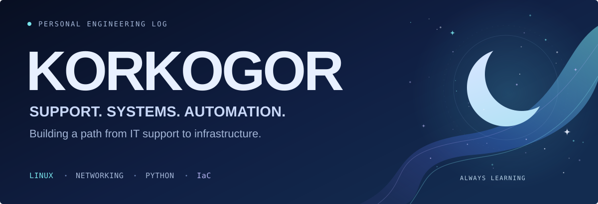

IT Support Engineer → Infrastructure / DevOps / Cloud
Master's student in Computer Science and Engineering · Information Systems Architecture
01 / Profile
I work in IT support and am building the skills to move into infrastructure engineering. My current focus is Linux, networking and automation — understanding how systems work, troubleshooting problems and turning routine tasks into scripts.
Alongside my master's studies, I explore Infrastructure as Code and automated configuration management. Unity and C# are my creative outlet: small games, prototypes and learning through practice.
02 / Toolkit
Systems & scripting
Practical foundation: Windows administration, Active Directory, PowerShell, Linux, networking, Python, Git, GitHub and IT troubleshooting.
Data & forecasting
Academic coursework in data analysis, time series forecasting and reproducible Python notebooks.
Game development
Unity & C# — small games, prototypes and gameplay experiments.
Time series & forecasting — coursework details
Exploring classical forecasting and neural networks through reproducible Python notebooks.
- Analysis & visualization: Pandas, NumPy, Matplotlib.
- Classical forecasting: Statsmodels, ARIMA.
- Neural forecasting: PyTorch, LSTM, NeuralForecast, NHITS, NBEATS.
- Additional forecasting tools: Prophet.
03 / Learning path
Infrastructure Engineering → DevOps → Cloud & Platform Engineering
Learning goals for automation, infrastructure and platform engineering.
| Stage | Focus | Status |
|---|---|---|
| Foundations | Linux administration, networking, Python, Git | |
| Automation & delivery | Bash, Docker, CI/CD, Ansible | |
| Infrastructure as Code | Terraform, repeatable provisioning, configuration management | |
| Platform operations | Kubernetes, cloud infrastructure, observability |
04 / Research & projects
Infrastructure automation
My academic research focuses on Infrastructure as Code and automated management of server configuration state. I am studying information systems architecture and preparing research papers on infrastructure automation.
Python & forecasting
Console applications and coursework projects: strings, lists, dictionaries, input validation and search logic. Academic notebooks explore data analysis, forecasting and reproducible experiments.
Unity & C#
Small game prototypes and gameplay experiments. A place to practice C#, try mechanics and build something playable.
Browse game development work →